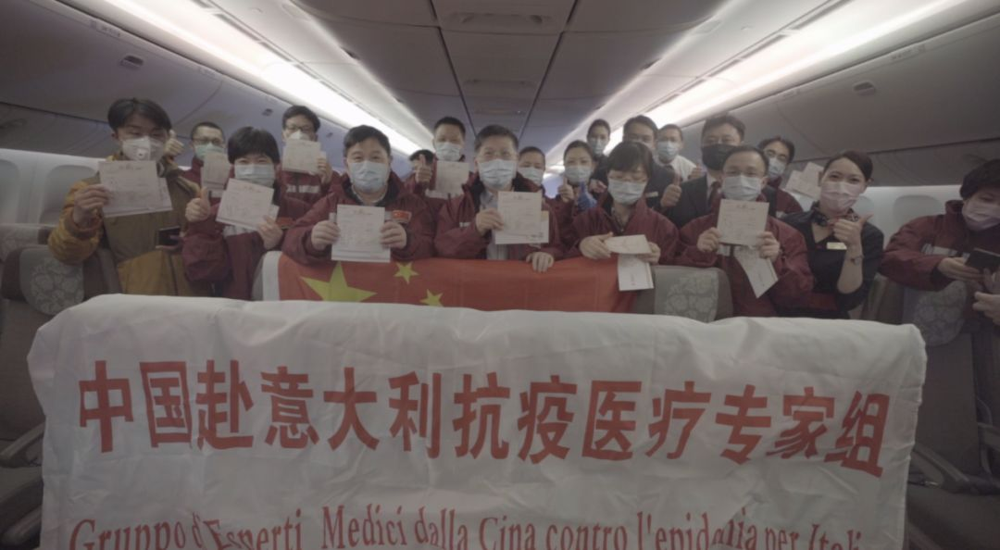
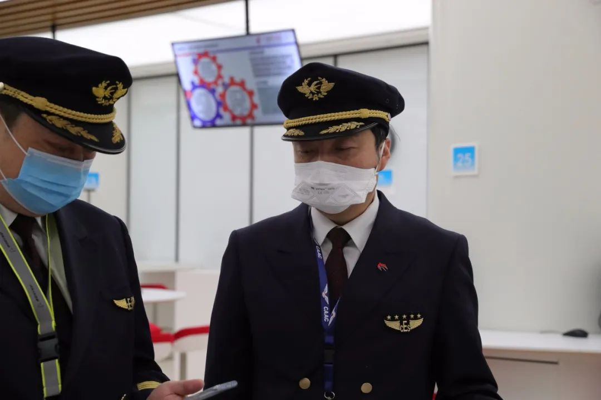
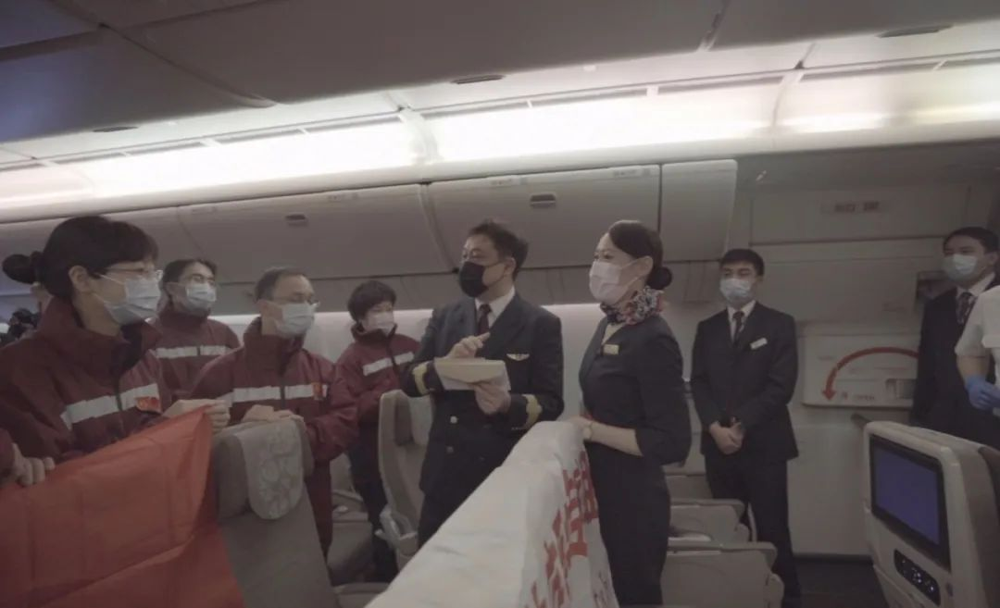
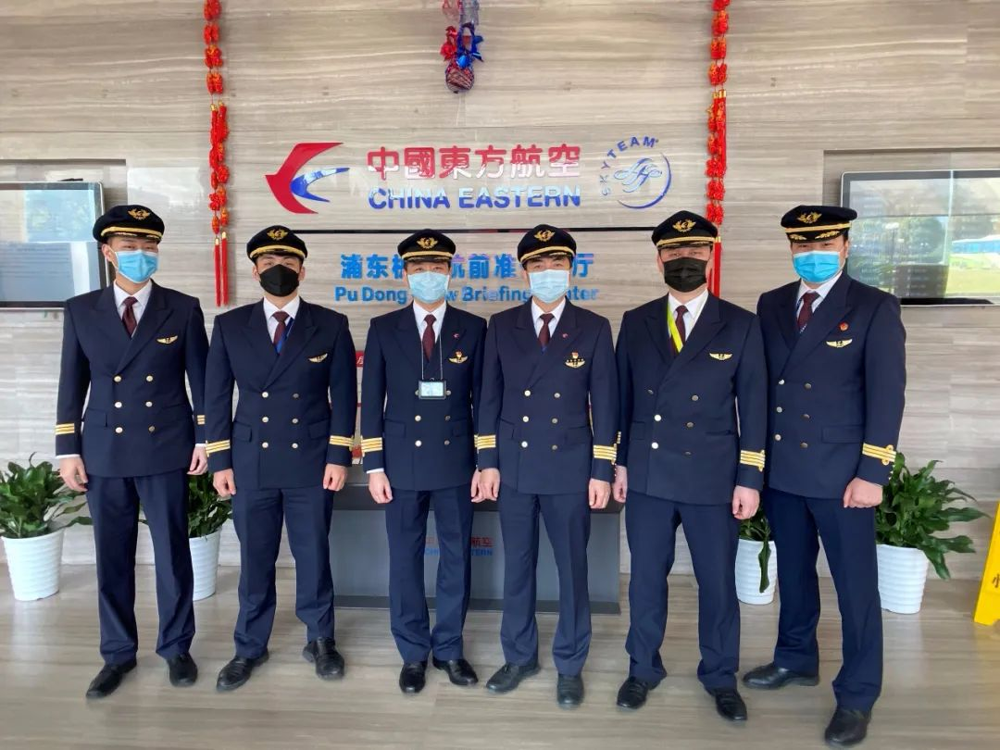

[四十日谈] 条条大路“不”通罗马，老猫的曲折回意之路
原文链接 备份链接 在昆明的家里远程工作 2020注定是不平凡的⼀年，疫情的状况牵动着我的一举一动。圣诞节回家，本来准备过完农历春节就走，现在一月过去了，二月过去了，三月也快过去了，却不知何时或是否还能再次出发。 1月23日 上午10 …

编者按：作为波音777机型C类教员、东航五星机长，贾建军飞过多种机型，拥有过硬的飞行技术和丰富的飞行经验。
3月18日中午，贾建军机组驾驶抗疫包机MU7041从上海浦东国际机场起飞，将来自中国的医疗专家组和物资“护送”至意大利米兰。
此次任务之前，贾建军的总飞行时间达21300小时，对带队完成飞行任务充满信心。而此行成功完成飞米兰的任务后，他直言有许多新收获。
主 笔 | 姜浩峰
受访人 | 贾建军
当我们机组飞进意大利飞航情报区的时候，心情确实与往常飞民航客机不同，也与2月上旬飞武汉驰援不同。这是我第一次飞米兰。当我们的波音777抵达米兰的时候，我感受到的是来自意大利的感谢。
视频：米兰塔台与中国机长的对话
我是贾建军，东方航空公司上海飞行部飞行二部总经理。我是在3月17日接到这次飞行任务的。18日11时26分从浦东国际机场起飞，当地时间18日16时31分降落在米兰市马尔彭萨国际机场。我们在米兰没下飞机，本来计划18时50分起飞回国，最后是在20时02分起飞的。从上海出发，31小时以后，我们回到上海。

贾建军执飞的东航MU7041包机航班，运送中国专家赴意大利
这次飞行，时间紧、任务重。当然，我是有心理准备的。我们东航上海飞行部做过前期动员，说可能会有飞意大利的任务。上海飞行部有空客A330、A350和波音777三种机型，飞行员按照机型组成各自部门。我们波音777是2013年改装，2014年9月成立机型团队。在东航，波音777相对来说是一款新飞机，也是目前东航最大的机型。3月12日东航飞出首班赴意大利专家包机，目的地是罗马，机型是A350-900。这次飞米兰，运送浙江赴意大利抗疫医疗专家组十余人，还有一些物资，我们波音777机组上了。

贾建军（右）和陈森机长在起飞前
尽管此前，2月9日我就曾执飞上海到武汉的航班，运送华山医院的专家和物资，甚至我们6位机组成员中有4位是第二次执行特殊战“疫”包机任务，大家不仅拥有过硬的飞行技术，还有疫区航班的经验，可比起国内航线来，我们飞米兰必须克服更多困难。
东航原本没有上海飞米兰的民航客机航班，这是我第一次飞意大利。另一机长陈森在中货航飞过货运航班到米兰，那已经是十年前的事了。如今陈森回归东航，对此行米兰一样充满了自豪感和自信心。
我以前飞过法兰克福、伦敦、巴黎，这一段航路，起码在中国进入欧洲之前是差不多的，但临时加飞的航班需要牵涉到此行所有飞越国境地共8个国家的批复，只要有一个国家批复不了就得延宕。而飞机进入意大利后，米兰马尔彭萨国际机场是什么情况，我也没有经验。
当我们机组6人领到3月18日起飞的飞行任务后，必须做好随时出发的准备。18日中午出发，在从中国飞往意大利的一路平飞过程中，我们发现——当听说是运送抗击疫情的物资时，各国空管都纷纷提供最优航路，并表达了敬意和美好祝愿。

波音777停在机场停机坪，贾建军在做整备
到了米兰上空，我的第一感觉就是米兰机场塔台的工作人员英语口音满重的，与在伦敦、法兰克福、巴黎听到的声音感觉不一样。当然，在飞这次航班之前，我们机组就做了准备。譬如我们的“90后”资深副驾驶利凌，他于2月19日执行了东航第二班波音777运送驰援武汉医疗队和防疫物资的包机任务，这次飞米兰是他第二次执行特殊战“疫”包机任务。利凌主动申请执飞米兰这一班，还因为他是一名报务教员，在通信方面拥有丰富的经验。毕竟塔台有些指挥是突然性的，我们必须仔细听，不能产生语言错觉。我们与塔台沟通，也尽量放慢语速，不能太快，要让对方听得懂，甚至不能让交流不愉快。
当我们和米兰塔台接上话后，确实和平时不一样。除了工作交流，我们多说了几句。
“东方航空7041，非常感谢你们的支持，意大利人感谢你们！”
我方回答：“加油，意大利！请照顾好我们的医生，中意友谊长存！”
话虽平实，却让我感到很震撼！这确实有一种中意友谊升华的感觉。

机组和客舱经理刘佩玉一起与医疗专家交流
这也是我第一次穿防护服执飞，真正体会到了医护人员的不易。防护服在身，一举一动都不那么自在。我们只需要坐着驾驶飞机，而医护人员穿着防护服后，还要进行各种医疗上的操作——操作机器，给病人打针输液，想想就非常不容易。在机长广播中，我是这么说的：“医疗队的专家们，你们不辞辛苦，不计回报，不怕生死，又一次冲在了第一线，而且越过国界，驰援意大利！你们此次前去意大利一线非常辛苦，我们更希望你们能照顾好自己，保护好自己，你们的安危都是祖国和人民的牵挂，待你们完成祖国交予的任务平安归来时，祖国接你们回家，东航接你们回家！”
陈森对医疗专家组说：“我的爱人是一名航医，也在抗‘疫’的一线工作，我特别能理解你们的辛苦……”
回到降落工作来说，平时到了欧洲大城市上空，我们经常要在空中左转右转，等待塔台命令，找时机降落。这次由于疫情的关系，米兰机场起降航班不多。塔台又给了我们优先落地权。我的感觉，比平时正常起降节约了15分钟。

第二批中国赴意大利抗疫专家抵达米兰
我们机组成员没有下飞机。这是东航对我们此行的一个保障要求——由于疫情的关系，尽量不与当地人接触。不过，我们公司罗马办事处的同事是赶到米兰迎接医学专家的。在飞机上，我感觉到意大利方面举行了一个欢迎仪式。这无疑也是透露出他们对中国的感激之情的。从后来看到的照片上，我发现，意大利机场工作人员高举横幅，引用古罗马哲学家塞涅卡的名言：“我们是同一片大海的海浪，同一棵树上的树叶，同一座花园里的花朵”，以欢迎中国专家。
我们的飞机16时31分降落后，原本准备18时50分起飞的，而因为疫情的原因，检验检疫方面更需严格把关。这样一来，我们延迟到20时02分才起飞。

在浦东航前准备厅留影，左三为贾建军
虽然在意大利我们没有下飞机，可回到上海后，我们还是必须隔离14天。感谢我的家人对我的支持。作为党员，也作为公司一个部门的负责人，我知道自己必须起到带头作用，冲在前线，到艰苦的地方去。
事实上，去年6月我还曾临时接到任务，飞西班牙马德里，为公安部统一指挥的“长城行动”押解特大跨境电信诈骗案94个嫌疑人。总体来说，这些飞行任务就是执飞机场不同，航班性质与民航客机不同，航班流程与民航客机也不同。目前看，随着全球疫情局势的发展，我在隔离14天以后是否还有新任务，还不知道。
外界有人担心，飞行员隔离14天，会否给正常航班起降带来影响，或者后续包机缺人飞。因为东航上海飞行部三种机型轮换，我认为，调度能够应对过来的。总之，我们希望自己的工作能对全世界抗击疫情有贡献，人们尽早战胜疫情。


· 我在海外 | 在伊朗的中国人：坐上回国包机前，都经历了什么？
· 我在海外 | 眼睁睁地看着巴伐利亚州的“新冠确诊”包围圈对我家越缩越小
新民周刊所有平台稿件， 未经正式授权
一律不得转载、出版、改编或进行
与新民周刊版权相关的其他行为，违者必究


原文链接 备份链接 在昆明的家里远程工作 2020注定是不平凡的⼀年，疫情的状况牵动着我的一举一动。圣诞节回家，本来准备过完农历春节就走，现在一月过去了，二月过去了，三月也快过去了，却不知何时或是否还能再次出发。 1月23日 上午10 …
原文链接 备份链接 但不论怎样，能从摩洛哥出来总归是好的。据我所知，现在仍有不少中国同胞滞留在摩洛哥，而该国戒严措施已经延长到4月了。 记 者 | 王仲昀 受访者 | 君 酱 今天（3月23日）上午，我从英国伦敦转机，终于回到日本东京。在 …
原文链接 备份链接 疫情暴发之初，在欧洲的中国留学生普遍比较平静。随着疫情在欧洲迅速蔓延，留学生们就算“确有回国需求”，也很难立即回来，直航纷纷取消，转机充满变数，包机需要审批，既然暂时回不来，那就只能留下来继续抗疫 文 |《财经》记者 …
原文链接 备份链接 *****到了晚上，城市变得出奇的安静。意大利人爱玩，若是没有疫情的话，晚上的酒吧和运河区，会是年轻人聚集的地方。在小酒馆里，他们花上十欧元，点一杯饮料，一坐就很久。“现在这些都没有了。”***** Stella家楼 …
原文链接 备份链接 空旷的意大利机场。 记者：陈晓双 “ 因担心意大利疫情加剧，不少当地留学生选择回国。飙升的票价、不断取消的航班、各国趋严的出入境政策，让他们行程充满波折、等待和风险。 ” 意大利作为欧洲率先爆发新冠肺炎疫情的国家，仅三 …